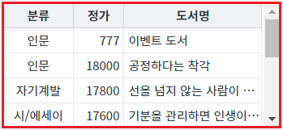
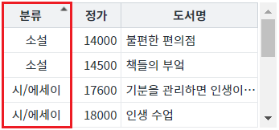
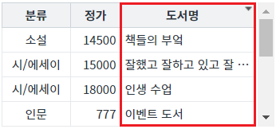
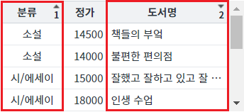
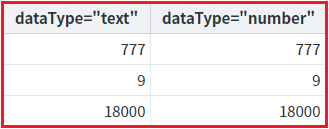
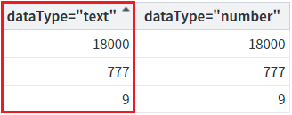
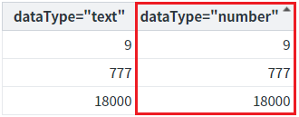
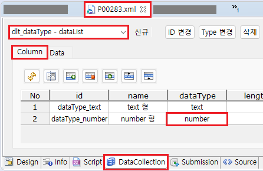

스크립트로 DataList의 컬럼의 데이터를 정렬하는 예제입니다.
이 예제는 DataList의 함수가 세 가지 사용되었으며, 다음과 같습니다.
단건 컬럼 정렬 : sort
다건 컬럼 정렬 : multisort
정렬 취소 : clearSort
숫자형 정렬을 적용하려면, DataList의 컬럼 속성 'dataType'의 설정 값을 'number' 또는 'bigDecimal'로 지정해야 합니다.
스크립트로 단건 컬럼 정렬하기
스크립트로 다건 컬럼 정렬하기
스크립트로 정렬 취소하기
숫자형 데이터로 정렬하기
각 예시 영역에 DataList와 연결되어 있는 GridView가 구성되어 있습니다. 이 GridView를 통해 DataList에 적용된 정렬 기능을 확인할 수 있습니다.
각 버튼을 클릭하여 데이터의 정렬을 확인합니다.
STEP 1. 초기 상태를 확인합니다.
예시 영역 단건 컬럼 정렬하기에 구성된 GridView를 통해 DataList의 초기 출력 값을 확인합니다.그림 1.브라우저(Chrome) 실행 예시

STEP 2. 문자형 데이터를 오름차순으로 정렬합니다.
버튼 1.1 컬럼 '분류'를 오름차순으로 정렬하기를 클릭합니다.STEP 3. 실행된 결과를 확인합니다.
GridView의 헤더 컬럼 '분류'에 오름차순 정렬 이미지가 표시되고, 데이터가 오름차순으로 정렬됩니다.
그림 2.브라우저(Chrome) 실행 예시

STEP 4. 문자형 데이터를 내림차순으로 정렬합니다.
버튼 1.2 컬럼 '도서명'를 내림차순으로 정렬하기를 클릭합니다.STEP 5. 실행된 결과를 확인합니다.
GridView의 헤더 컬럼 '도서명'에 내림차순 정렬 이미지가 표시되고, 데이터가 내림차순으로 정렬됩니다.
그림 3.브라우저(Chrome) 실행 예시

STEP 6. 정렬을 해제합니다.
버튼 1.0 DataList의 정렬 해제를 클릭합니다.STEP 7. 실행된 결과를 확인합니다.
적용된 정렬 기능이 해제됩니다.
그림 4.브라우저(Chrome) 실행 예시
각 버튼을 클릭하여 데이터의 정렬을 확인합니다.
STEP 1. 초기 상태를 확인합니다.
예시 영역 다건 컬럼 정렬하기에 구성된 GridView를 통해 DataList의 초기 출력 값을 확인합니다.그림 5.브라우저(Chrome) 실행 예시
STEP 2. 두 개의 컬럼을 정렬합니다
버튼 2.1 컬럼 '분류'를 오름차순으로, 컬럼 '도서명'을 내림차순으로 정렬하기를 클릭합니다.STEP 3. 실행된 결과를 확인합니다.
GridView의 헤더 컬럼 '분류'에 오름차순 정렬 이미지와 정렬 순서가 표시되고, 데이터가 오름차순으로 정렬됩니다. GridView의 헤더 컬럼 '도서명'에 내림차순 정렬 이미지와 정렬 순서가 표시되고, 데이터가 내림차순으로 정렬됩니다.
그림 6.브라우저(Chrome) 실행 예시

STEP 4. 정렬을 해제합니다.
버튼 2.0 DataList의 정렬 해제를 클릭합니다.STEP 5. 실행된 결과를 확인합니다.
적용된 정렬 기능이 해제됩니다.
그림 7.브라우저(Chrome) 실행 예시
각 버튼을 클릭하여 데이터의 정렬을 확인합니다.
STEP 1. 초기 상태를 확인합니다.
예시 영역 숫자형 컬럼 정렬하기에 구성된 GridView를 통해 DataList의 초기 출력 값을 확인합니다.
두 컬럼의 데이터는 동일하며 DataList의 컬럼 속성 'dataType'의 설정 값이 다르게 지정되었습니다.그림 8.브라우저(Chrome) 실행 예시

STEP 2. 문자형 데이터로 정렬하기
버튼 3.1 'dataType="text"'를 오름차순으로 정렬하기를 클릭합니다.STEP 3. 실행된 결과를 확인합니다.
GridView의 헤더 컬럼 '정가'에 오름차순 정렬 이미지와 정렬 순서가 표시되고, 문자형 데이터로 오름차순 정렬됩니다.
그림 9.브라우저(Chrome) 실행 예시

STEP 4. 숫자형 데이터로 정렬하기
버튼 3.2 'dataType="number"'를 오름차순으로 정렬하기를 클릭합니다.STEP 5. 실행된 결과를 확인합니다.
GridView의 헤더 컬럼 '정가'에 오름차순 정렬 이미지와 정렬 순서가 표시되고, 숫자형 데이터로 오름차순 정렬됩니다.
그림 10.브라우저(Chrome) 실행 예시

STEP 6. 정렬을 해제합니다.
버튼 3.0 DataList의 정렬 해제를 클릭합니다.STEP 7. 실행된 결과를 확인합니다.
적용된 정렬 기능이 해제됩니다.
그림 11.브라우저(Chrome) 실행 예시
DataList의 함수 'sort'를 이용하여 스크립트를 작성합니다. 세부 지정은 아래의 스크립트 예시에 작성되어 있습니다.
스크립트
//예제 파일에서는 스크립트 scwin.btn_exam1_1_onclick에 작성되어 있습니다. // DataList 'dlt_books_1'의 컬럼 '분류'를 오름차순으로 정렬합니다. dlt_books_1.sort("categoryLabel", 0); // 첫 번째 인자 : DataList의 컬럼 ID 또는 Index // 두 번째 인자 : 정렬 옵션 [0,1,2] 0:오름차순, 1:내림차순, 2:정렬 취소
DataList의 함수 'multisort'를 이용하여 스크립트를 작성합니다. 세부 지정은 아래의 스크립트 예시에 작성되어 있습니다.
스크립트
//예제 파일에서는 스크립트 scwin.btn_exam2_1_onclick에 작성되어 있습니다. // DataList 'dlt_books_2'의 컬럼 '분류'를 오름차순으로, 컬럼 '도서명'을 내림차순으로 정렬합니다. let options = {}; options.sortIndex = "categoryLabel label"; // DataList의 컬럼 ID 또는 Index. 공백으로 컬럼을 구분합니다. options.sortOrder = "1 -1"; // 정렬 기준으로 공백으로 구분합니다. 1:오름차순, -1:내림차순 dlt_books_2.multisort(options);
DataList의 함수 'clearSort'를 이용하여 스크립트를 작성합니다. 세부 지정은 아래의 스크립트 예시에 작성되어 있습니다.
스크립트
//예제 파일에서는 스크립트 scwin.btn_sortInit_1_onclick에 작성되어 있습니다. // DataList 'dlt_books_1'의 정렬을 해제합니다. dlt_books_1.clearSort();
숫자형 정렬을 적용하려면, DataList의 컬럼 속성 'dataType'의 설정 값을 'number' 또는 'bigDecimal'로 지정해야 합니다.
스크립트로 컬럼의 데이터 유형을 변경하는 기능은 지원하지 않으며 DataList 구성 시 지정해야 합니다.
(기준 엔진 버전 : 5.0_5.4916B.20230523.145942)
STEP1. DataList의 컬럼 속성을 정의합니다.
[필수] dataType="number" 또는 "bigDecimal" 또는 "float"
그림 12.웹스퀘어5 SP5 스튜디오의 에디터 탭 [DataCollection] 예

소스 코드
<w2:dataList baseNode="list" id="dlt_dataType" repeatNode="map"> <w2:columnInfo> <!-- 중략 --> <w2:column dataType="number" id="dataType_number" name="number 형"></w2:column> </w2:columnInfo> </w2:dataList>
clearSort( )
multisort( options )
sort( bodyColumnID , sortType )
[column] dataType